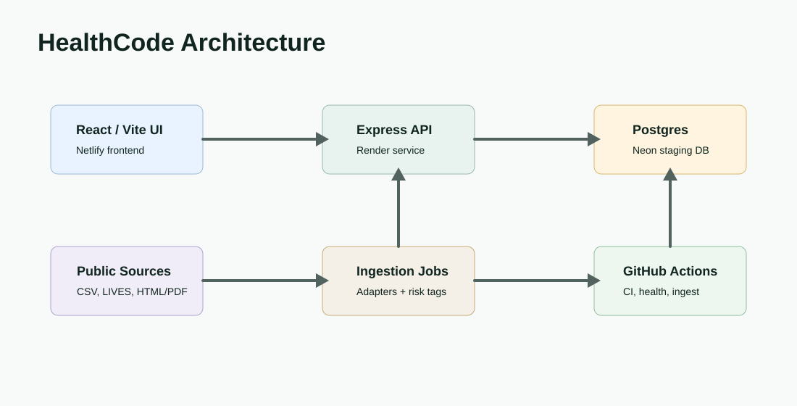
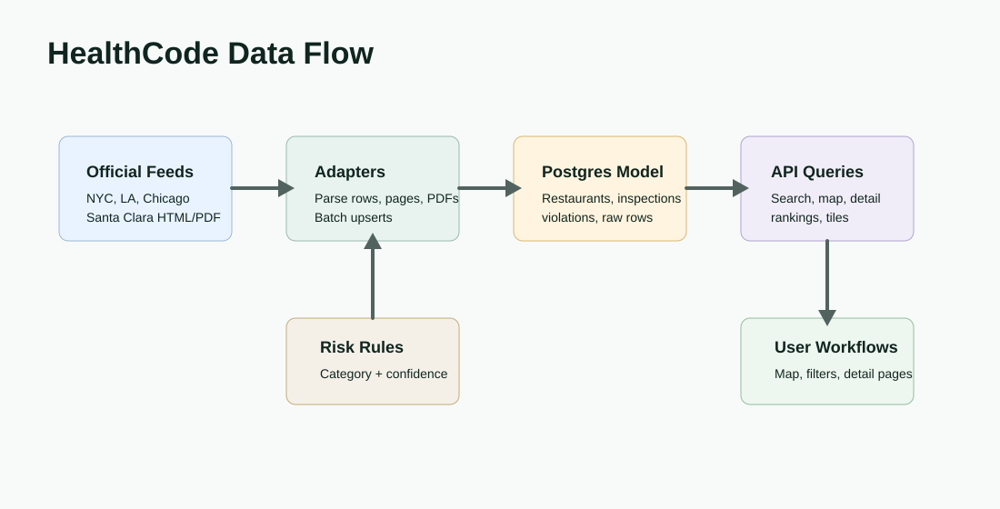

Product Surface


Problem
Restaurant inspection data is public, but it is scattered across different source formats, jurisdictions, schemas, and publication habits. A useful product has to make that information searchable and geographically explorable while keeping source-level detail available for review.
Solution
HealthCode normalizes inspection feeds into a PostgreSQL-backed domain model for restaurants, inspections, violations, risk tags, and ingest runs. The React frontend gives users map, search, ranking, and detail workflows while the Express API applies validation, response caps, and privacy-conscious request logging.
Data Flow

Design Decisions
Adapter-Based Ingestion
Each jurisdiction can expose data differently, so ingestion is split into adapters instead of forcing one brittle import path.
Raw-Row Traceability
Normalized records retain links back to source rows and ingest runs so quality issues can be debugged without guessing.
Safer Public Search
The API uses parameterized queries, wildcard escaping, query length limits, and control-character rejection before hitting search endpoints.
Map-Friendly Responses
Map and ranking endpoints are shaped for bounded responses, cached behavior, and frontend scanning rather than unlimited exports.
Operations And Reliability
The workflow uses GitHub Actions for migrations, sample ingest, risk backfill, tests, and frontend build checks. Separate scheduled staging checks verify the public frontend, API health endpoint, and database health endpoint, while weekly/manual staging ingest keeps the data path exercised.